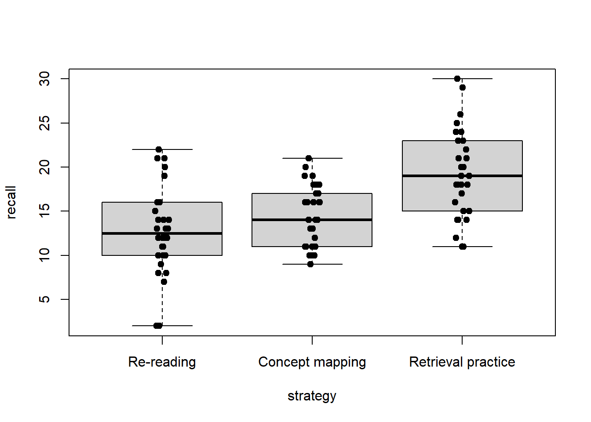
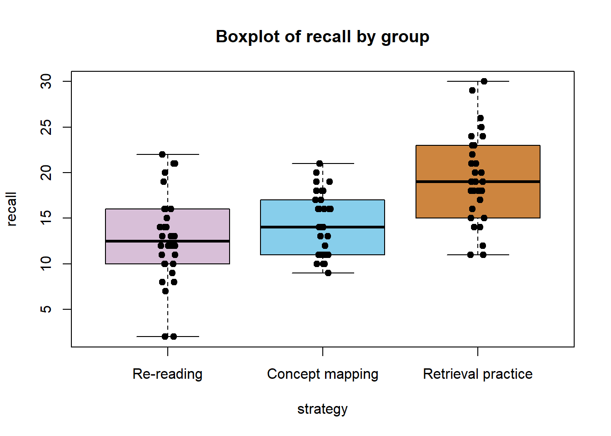

df <- read.csv("studyStrategyData.csv")PS71020_Unit3_Homework
A Review of Basic Statistical Tests
Learning Outcomes:
1 - Use RStudio to perform a one way ANOVA and post-hoc tests
2 - Use RStudio to perform a repeated measures ANOVA
3 - Use RStudio to perform a mixed ANOVA
4 - Learn the standard way of reporting the results of these statistical tests and extracting the values from RStudio output
Materials Used:
We will use the packages tidyr, car, rstatix, ggpubr and psych, these are already installed on the RStudio Server but if you are working on your own Laptop you may need to install it.
SECTION A. ONE-WAY BETWEEN SUBJECTS ANOVA
The data set in studyStrategyData.csv comes from an experiment in which 90 students read the same passage on the history of psychometrics, then are randomly assigned to one of three ways of studying it for 20 minutes (30 students per group): 1 - Re-reading - read the passage again 2 - Concept mapping - draw a diagram linking the key ideas 3 - Retrieval practice - close the passage and write down what they remember One week later everyone takes the same recall test (30 questions).
The data can be found on the VLE in this week’s homework files section or there is a direct download here Github Link
Read the data from the .csv file.
Set up the factors, since these are already specified as strings (letters instead of numbers), we can just use these as the levels, previously we had been dealing with factors with levels represented by numbers and labels represented by strings.
df$strategy <- factor(df$strategy, levels = c("Re-reading",
"Concept mapping",
"Retrieval practice"))What would the formula be to look at the effect of strategy on recall?
aovFormula <- recall ~ strategy
We can the carry out our assumption checks.
library(car)Loading required package: carDataleveneTest(aovFormula,df)Levene's Test for Homogeneity of Variance (center = median)
Df F value Pr(>F)
group 2 0.8567 0.4281
87 What assumption does levene’s test check? And what does the result here indicate
Homogeneity of variance, the result is not significant so the assumption holds.
We can build our ANOVA model using the aov() function, remember to assign the output to a variable so we can use it in subsequent steps, such as getting a summary.
mdl <- aov(aovFormula,df)The mdl object contains various bits of information, just like a dataframe we can access these using the $ symbol. One of the most useful one is mdl$residuals which contains the residuals of the ANOVA model (the error term). One of the key assumptions of an ANOVA is that these are normally distributed.
What code would we use to test this assumption and produce the results seen below? What do the results indicate?
The code is: shapiro.test(mdl$residuals)
The result is not significant (p = 0.82) so the assumption is not violated.
Shapiro-Wilk normality test
data: mdl$residuals
W = 0.99132, p-value = 0.8232Below is how to get an easy to read version of the ANOVA results:
summary(mdl) Df Sum Sq Mean Sq F value Pr(>F)
strategy 2 671 335.5 16.53 8.21e-07 ***
Residuals 87 1765 20.3
---
Signif. codes: 0 '***' 0.001 '**' 0.01 '*' 0.05 '.' 0.1 ' ' 1Post-hoc tests and grouped descriptive statistics:
library(psych)
Attaching package: 'psych'The following object is masked from 'package:car':
logitTukeyHSD(mdl) Tukey multiple comparisons of means
95% family-wise confidence level
Fit: aov(formula = aovFormula, data = df)
$strategy
diff lwr upr p adj
Concept mapping-Re-reading 1.633333 -1.140024 4.406691 0.3431459
Retrieval practice-Re-reading 6.433333 3.659976 9.206691 0.0000010
Retrieval practice-Concept mapping 4.800000 2.026643 7.573357 0.0002458describeBy(df$recall, df$strategy)
Descriptive statistics by group
group: Re-reading
vars n mean sd median trimmed mad min max range skew kurtosis se
X1 1 30 12.77 4.95 12.5 12.83 3.71 2 22 20 -0.11 -0.19 0.9
------------------------------------------------------------
group: Concept mapping
vars n mean sd median trimmed mad min max range skew kurtosis se
X1 1 30 14.4 3.47 14 14.29 4.45 9 21 12 0.15 -1.34 0.63
------------------------------------------------------------
group: Retrieval practice
vars n mean sd median trimmed mad min max range skew kurtosis se
X1 1 30 19.2 4.94 19 19.04 5.93 11 30 19 0.27 -0.62 0.9Effect size:
library(rstatix)
Attaching package: 'rstatix'The following object is masked from 'package:stats':
filtereta_squared(mdl) strategy
0.2753969 Write up the results in a standard format for a report:
A one-way between-subjects ANOVA showed a significant effect of study strategy on delayed recall, F(2, 87) = 16.53, p < .001, η² = .28. Tukey HSD post hoc comparisons showed that retrieval practice (M = 19.2, SD = 4.94) produced significantly higher recall than both re-reading (M = 12.77, SD = 4.95) p < .001 and concept mapping (M = 14.40, SD = 3.47) p < .001. Re-reading and concept mapping did not differ significantly (Mdiff = 1.63, p = .343).
Finally we can use the code below to create a boxplot with overlayed points:
boxplot(aovFormula, data = df, outline = FALSE)
stripchart(aovFormula, data = df, vertical = TRUE, method = "jitter", jitter = 0.05, pch = 19, add = TRUE)
Does the boxplot support the results of the statistical test?
Yes, it shows that retrieval practice has higher recall than the other two groups, but that the other groups are very similar. These are in line with a significant ANOVA and the pattern observed in the post hoc tests. Also the variance in each group looks similar according to the boxplot, this matches the lack of significance in Levene’s test.
Try to edit the code used for the figure to give each bar a difference colour and give the figure a title.
boxplot(aovFormula, data = df, main = "Boxplot of recall by group", col = c("thistle","skyblue","peru" ),outline = FALSE)
stripchart(aovFormula, data = df, vertical = TRUE, method = "jitter", jitter = 0.05, pch = 19, add = TRUE)